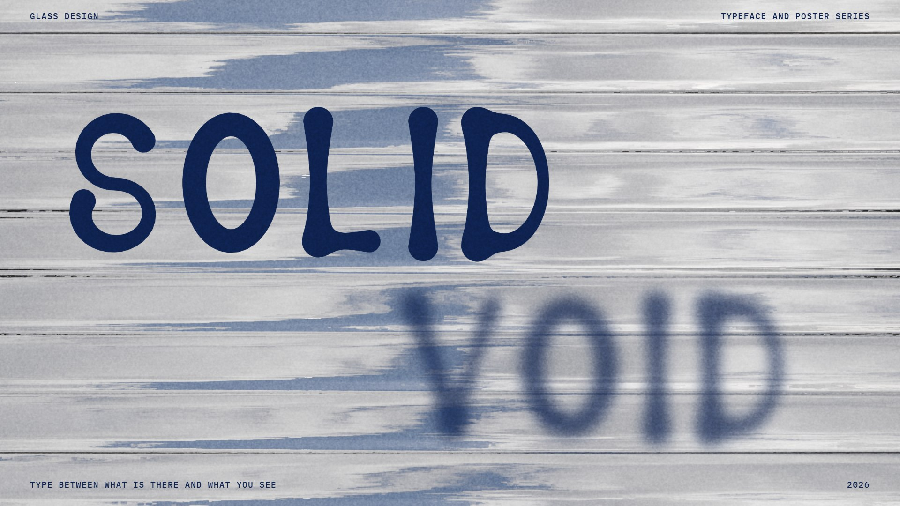
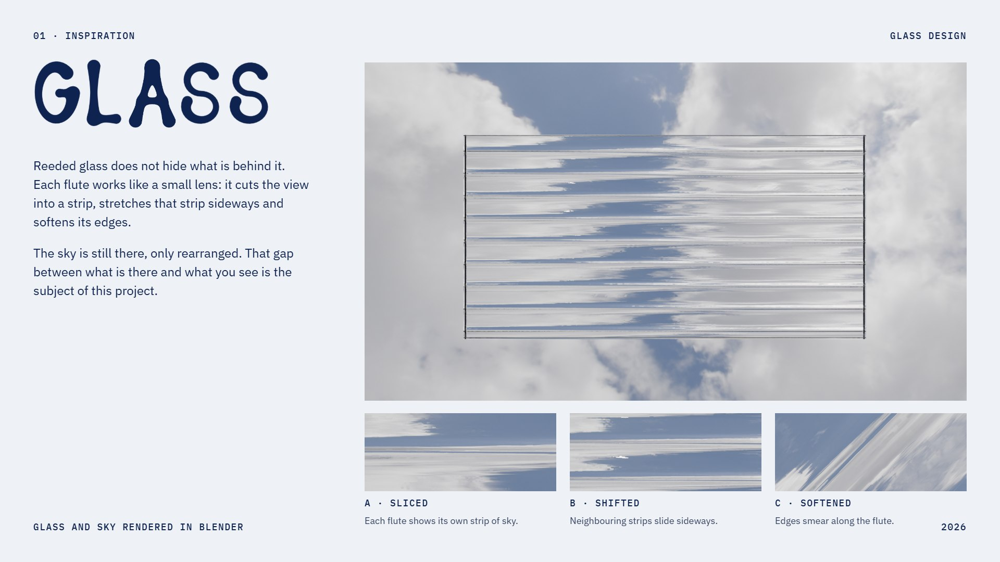
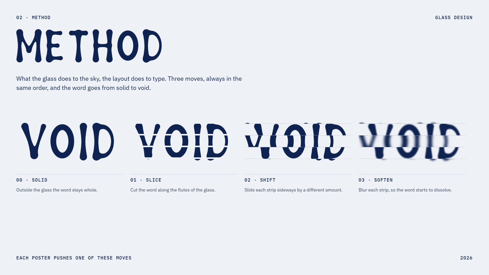
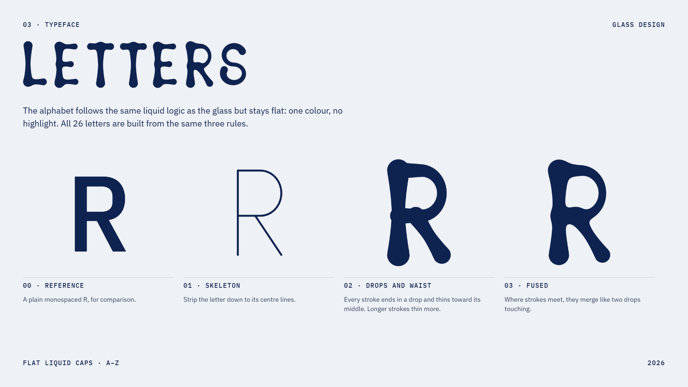
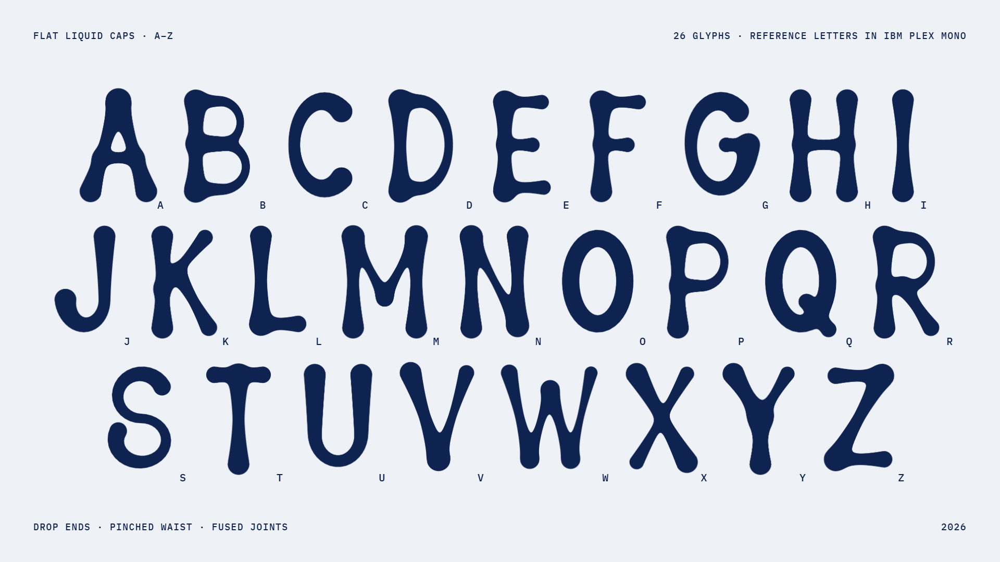
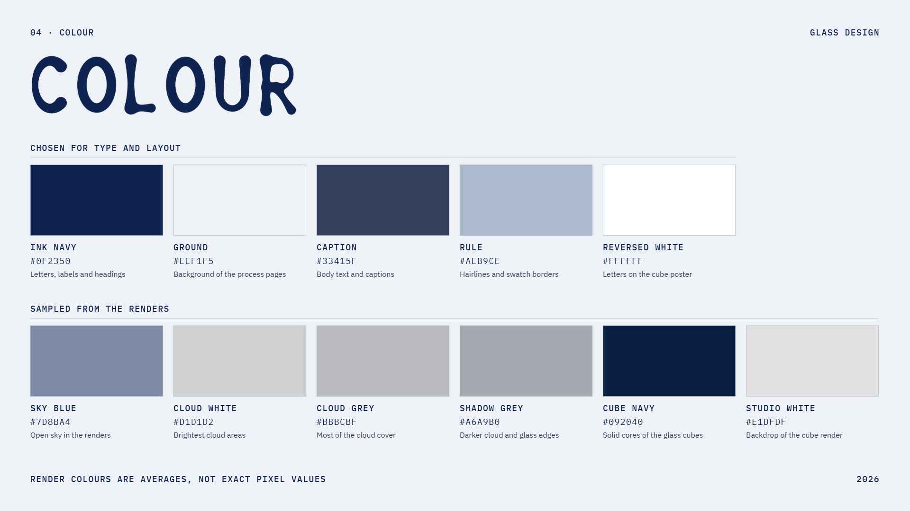
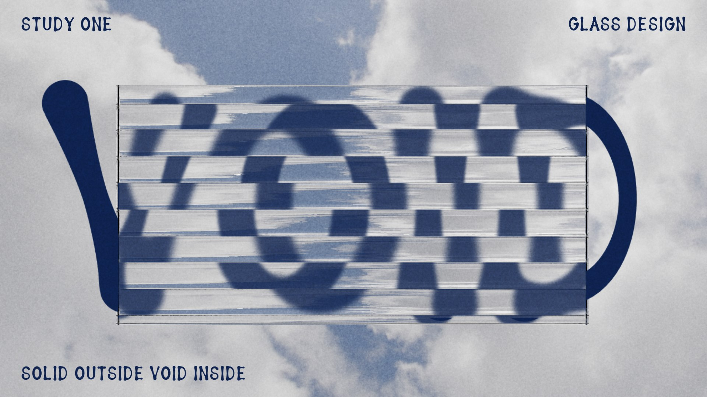
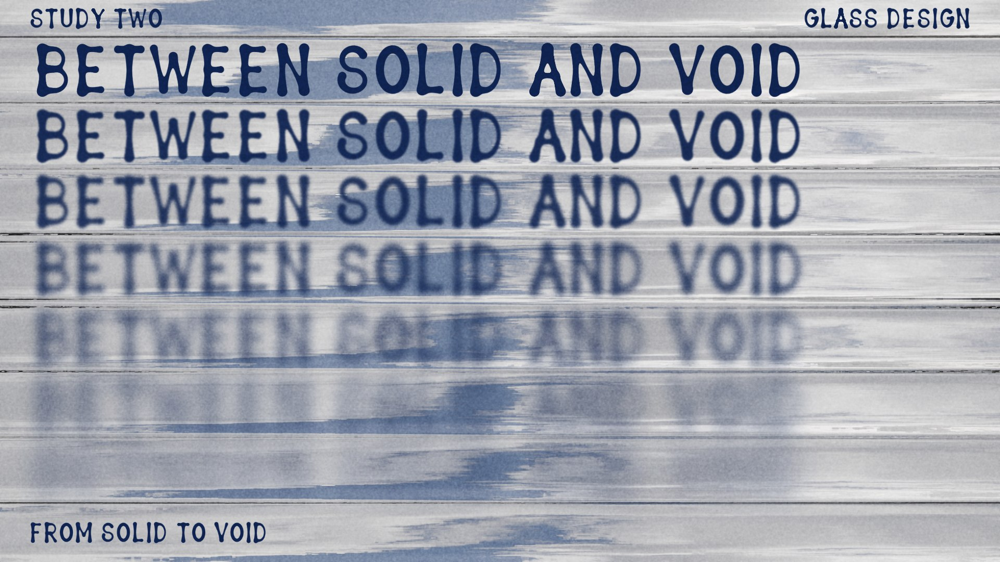
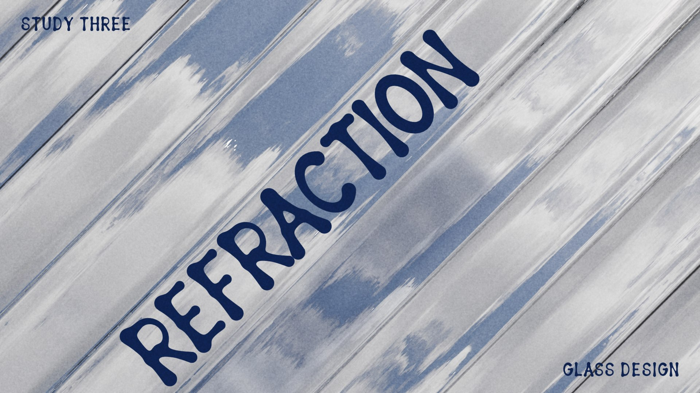
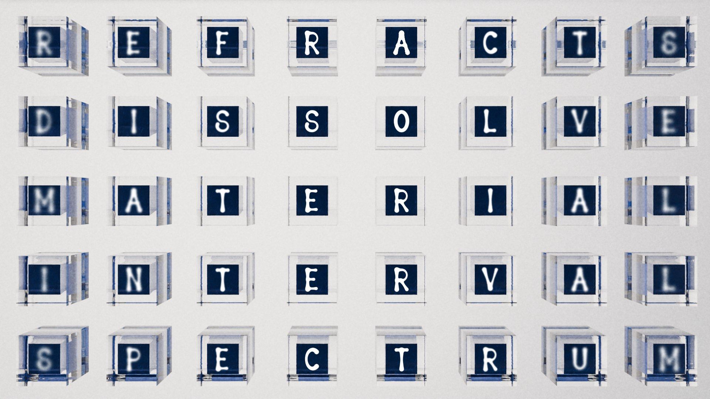

◀︎ Selected Work
02 — 2026
Glass
Design
Type between what is there and what you see. What the glass does to the sky, the layout does to type: slice, shift, soften, and the word goes from solid to void.










Info